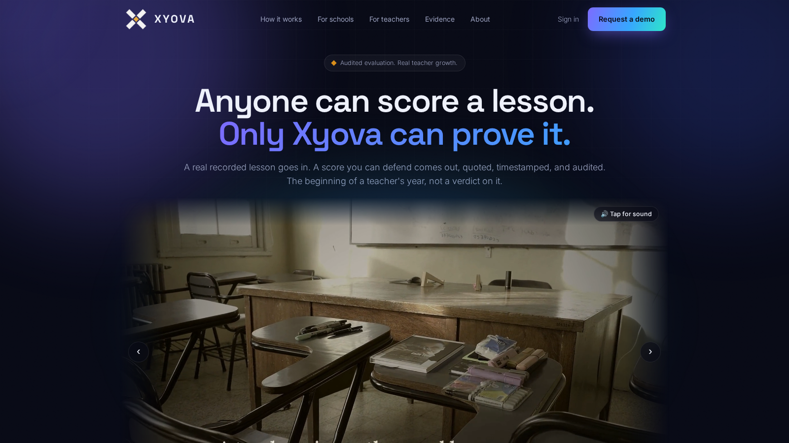

01 / XYOVAAI EVALUATION · LIVE PRODUCT

ACTUAL WEBSITE CAPTURE / 16:9xyova.com ↗
Can an AI score be defended?
Recorded lessons are easy to summarize. Giving a teacher a score they can inspect is a different engineering problem.
- Problem
- Fluent AI output can still be wrong, incomplete, or unsupported.
- Decision
- Anchor findings to timestamped quotes, multilingual speech processing, and statistical review before release.
- My role
- AI evaluation architecture, FastAPI services, pipeline design, engineering ownership and delivery.